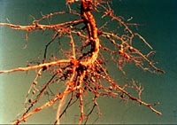

Inoculation of Nitrogen-Fixing Plant Seed
Legume crops are able to take much of their nitrogen (N) requirement from the atmosphere by forming a symbiotic association with soil bacteria called Rhizobium. These bacteria colonize the legume roots in structures called nodules and fix nitrogen for the legume. Many Saskatchewan soils lack the specific rhizobia needed for rapid growth and high yields of legumes (especially for forage). Inoculation corrects these deficiencies by sticking thousands of highly effective N-fixing bacteria to each seed prior to seeding. The correct strain of rhizobium must be used; specific to the type of seed being planted.
After germination of the seed, the bacteria form nodules on the roots and begin taking nitrogen (N) gas from the soil air. They convert the gas to ammonium an give it to the plant. Well nodulated legumes can grow vigorously without the need for commercial nitrogen fertilizer. The inoculant must 'stick' to the seed. The use of a sticker such as a syrup or powdered milk solution will ensure the inoculant sticks to the seed. Some inoculants are produced with self adhesives.
The inoculum may be applied to dry seed in a slurry of inoculum and sticker solution and mixed thoroughly just prior to seeding. The use of a sticking agent such as corn syrup (a dilute solution), milk or powdered milk in solution will increase the amount of inoculum sticking to the seed. A garden sprayer or a thoroughly cleaned herbicide tank with a hose and nozzle attached to the outlet may be used to apply the sticker solution to the seed. The inoculated seed should be kept out of the sun and seeded soon after inoculation, since the bacteria will not tolerate sunlight or prolonged drying. The inoculated seed is then planted and the crop then has the ability to fix nitrogen in the soil.
|